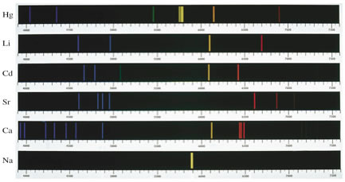

Spectra and atomic structure |
 |
What process is responsible for the emission of these wavelengths of light? Why do only certain wavelengths of light appear for each element?
Some street lights contain sodium vapor (check this) and appear to cast a yellowish light, does this make sense? Explain
When sodium chloride is heated strongly in a high temperature Bunsen flame, the flame glows yellow - and this is said to be a test for the presence of sodium. What is actually happening when the flame glows yellow?
Why do most light bulbs emit what appears to be white light?
|
© Cooper & Klymkowsky
CLUE project last update:
08-Feb-2010
|